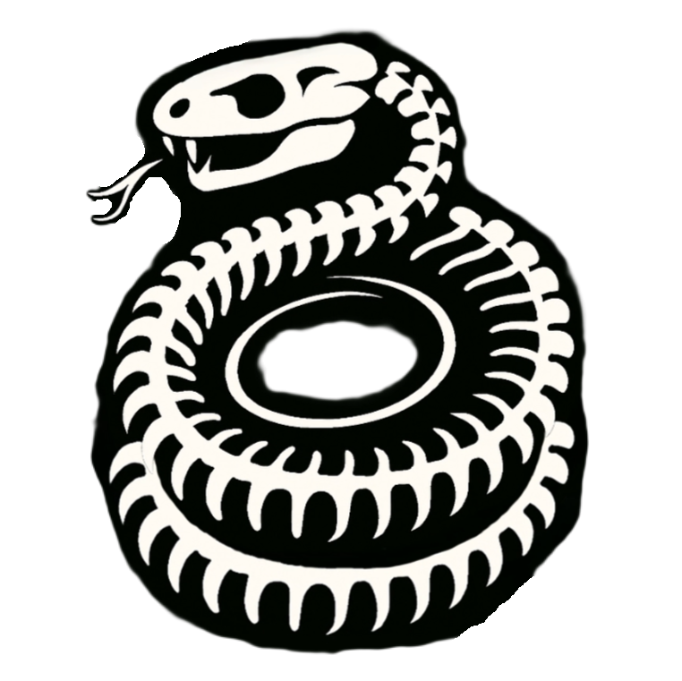
Pagina Principal
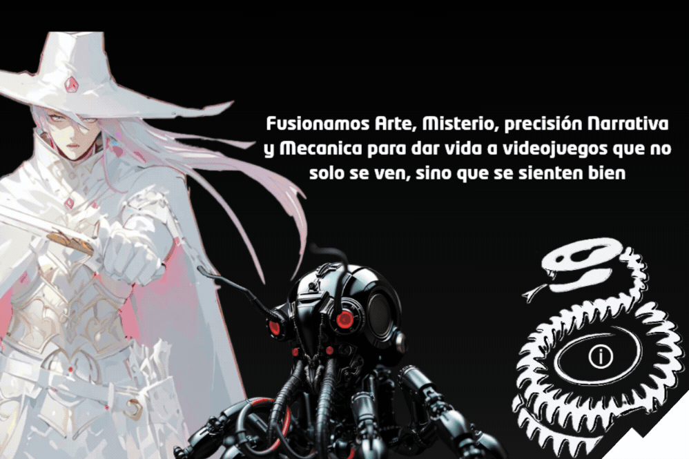
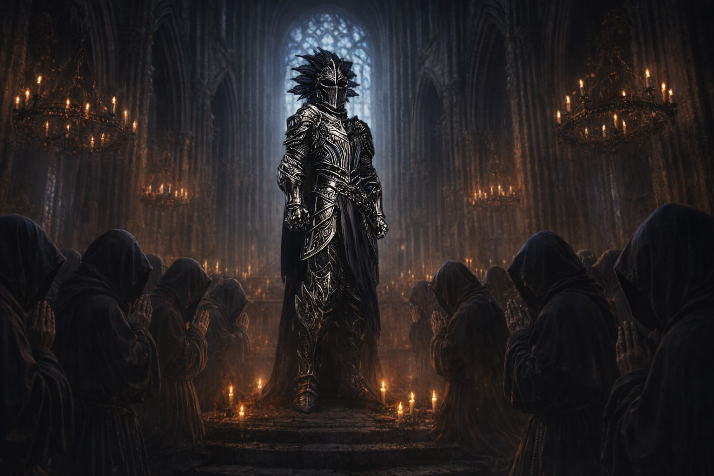
Dungeon Crawler en Primera Persona con Mazmorras generadas Proceduralmente y Movimiento GRID
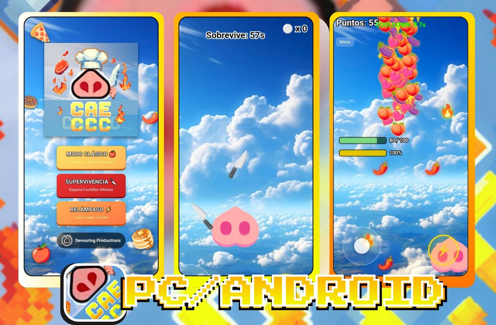
Juego Arcade Emoji! hecho en HTML. ¡Consigue la Mejor Puntuacion!
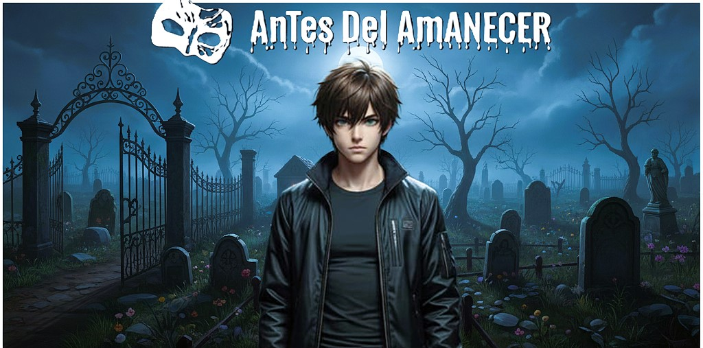
Sobrevive hasta el amanecer atrapado en un Terrorifico cementerio, Unity 3D.
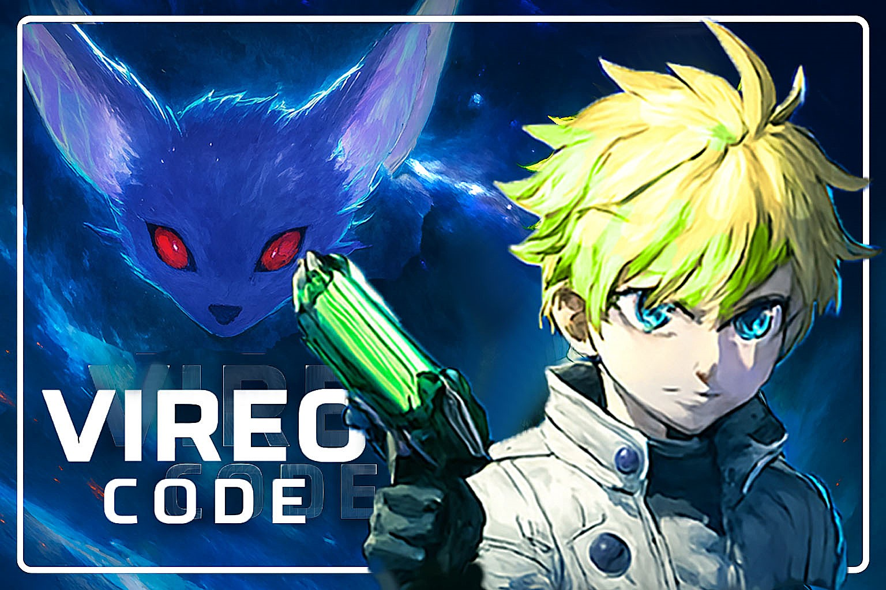
RPG Sci-fi hecho en RPG Maker MV. ¿Y si un dia eres transportado a un lugar aleatorio del Universo?
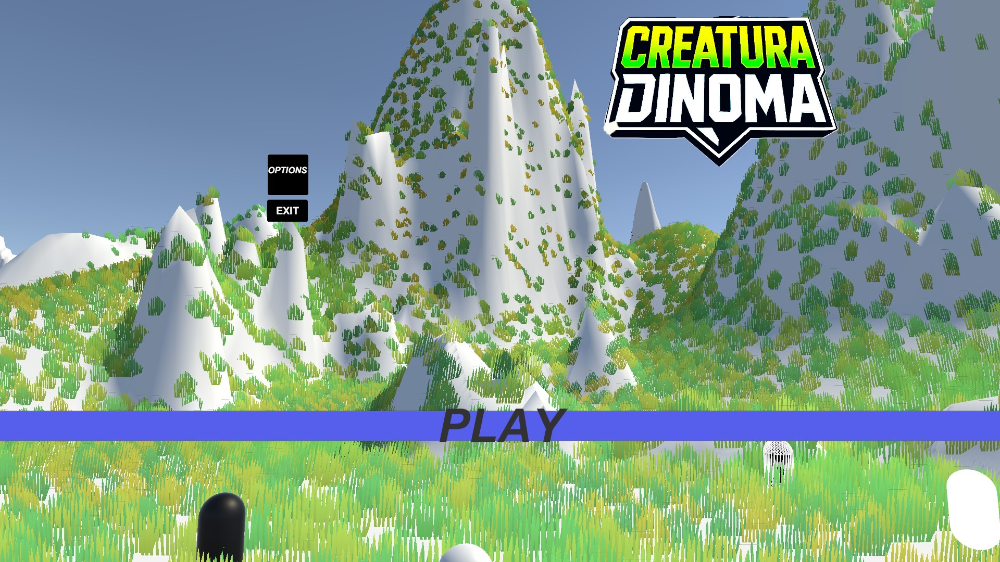
Juego 3D de extracción hecho en Unity, Captura Criaturas en entornos alienigenas.
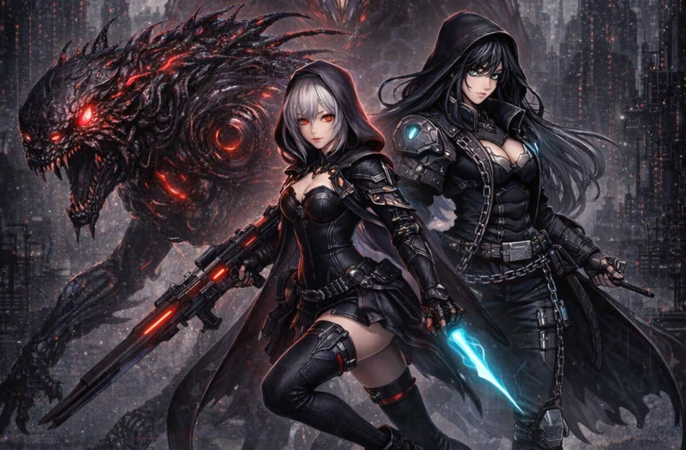
Shoot 'em up Vertical diseñado en Jabali Studio, Mejora tu personaje y Sobrevive cada instancia.
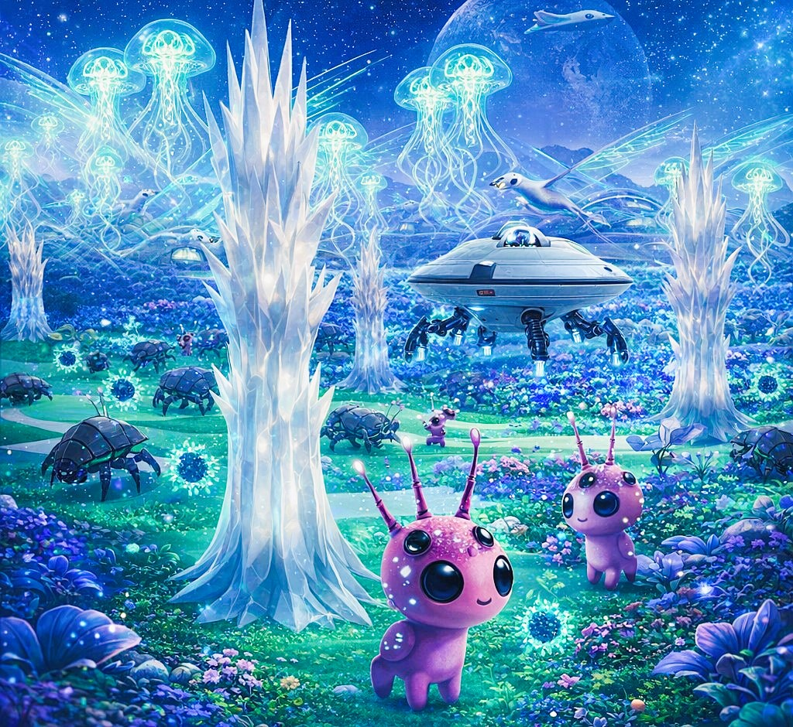
Captura criaturas saltarinas, Incuba huevos y eclocionalos, Recoge minerales o Analiza reliquias antiguas.
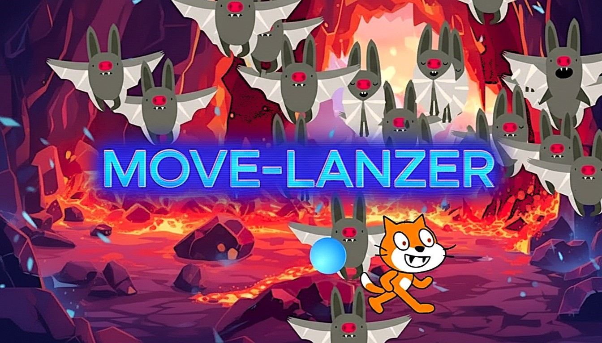
Juego de oleadas infinitas hecho en Scratch. "Frenesí explosivo inteminable que pone a prueba tu paciencia"
Descripción: ¿Serás capaz de surfear por la Cascada de 5000 Metros, llegar a la Cima, y Coronarte como el Rey de Regulus? Edicion: GDevelop BIG Game Jam #9 Tema: TO THE TOP
Descripción: Drena salud y asesina al corazón en este Bullet Hell 2D sangriento. Desafía tus reflejos esquivando oleadas extremas y administrando tu Sangre. Proyectado originalmente para el evento Bullet Hell Jam 7
Descripción: Durante la Gamedev.js Jam 2026 lleve a cabo un Experimento incremental estratégico enfocado en el mantenimiento, gestión de recursos y alimentación de una compleja máquina criogénica productora de hielo.
Descripción: Dungeon Crawler en primera persona con generación procedural de mazmorras y un preciso sistema de movimiento basado en rejilla (GRID), proyecto iniciado en la Dungeon Crawler Jam 2026.
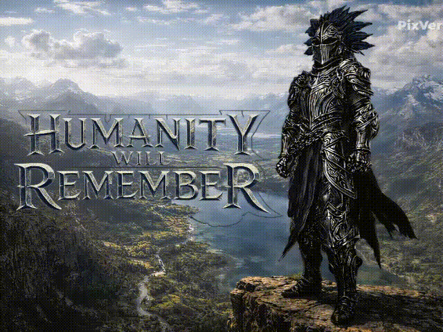
Descripción: Eres un Robot Libre en un Mundo Desconocido. Basado en el Coleccionismo y Descubrimiento en formato vertical. Captura, incuba, recolecta o analiza
Descripción: Un juego incremental completamente en HTML. ¡Controla a 🐽 en este frenético juego arcade de esquivar y recolectar! 4 modos de juego únicos pondrán a prueba tu habilidad!.
Descripción: Rogue-lite Mobile Vertical. Mejora tu personaje y sobrevive a cada instancia junto a tu bestia espiritual mientras eres perseguido/a por ejercitos de enemigos.
Descripción: Sobrevive atrapado en un tétrico cementerio enfrentando peligros paranormales antes de que llegue la luz del día. Desarrollado para la Global Game Jam.
Descripción: Mi proyecto de Unity, un videojuego del género Extracción en 3D centrado en la comedia, la exploracion y la recolección. Atrapá, transportá y vendé criaturas.
Descripción: Mi proyecto en RPG Maker MV. Es un juego de rol de estética Sci-fi que creé en la materia de Fundamentos de la Programación I. ¿Y si un dia eres transportado a un lugar aleatorio del Universo?
Descripción: Proyecto de Scratch, un juego de Oleadas Infinitas que hice como parte de la carrera Diseño y Producción de videojuegos. "Frenesí explosivo interminable".
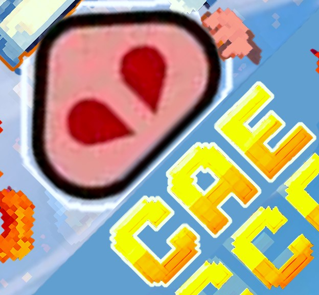
Juego Arcade hecho Completamente en HTML.
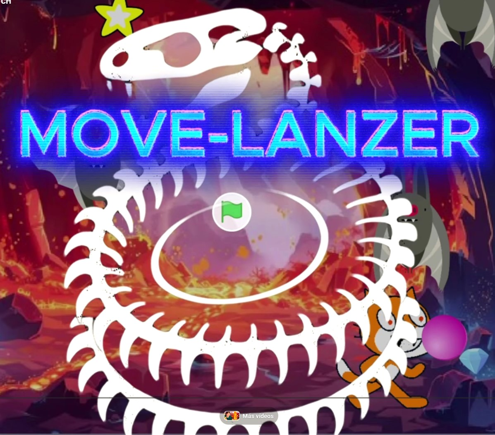
Juego de oleadas infinitas hecho en Scratch.
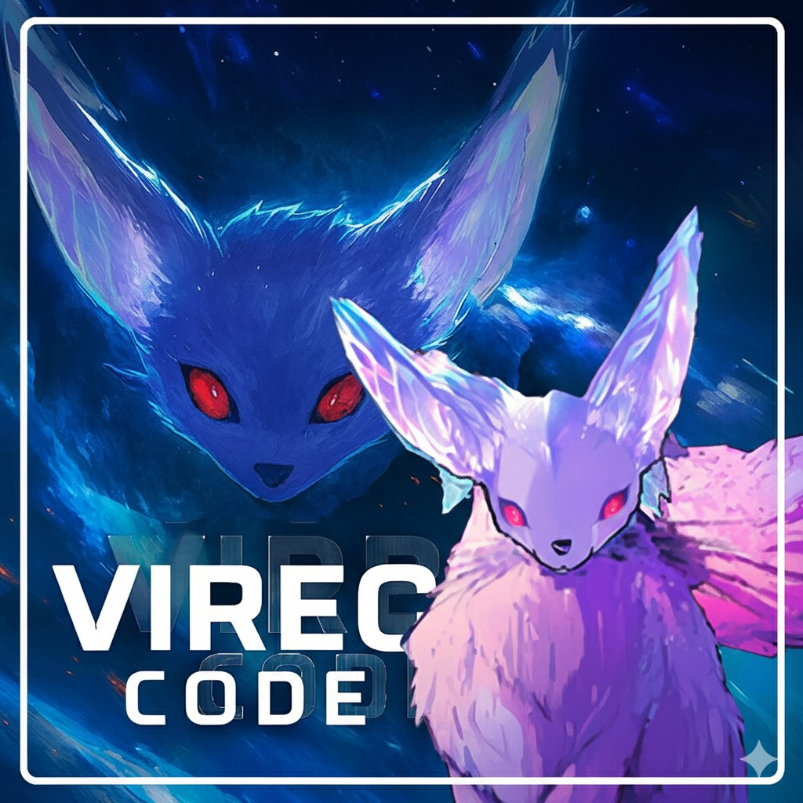
RPG Sci-fi hecho en RPG Maker MV.
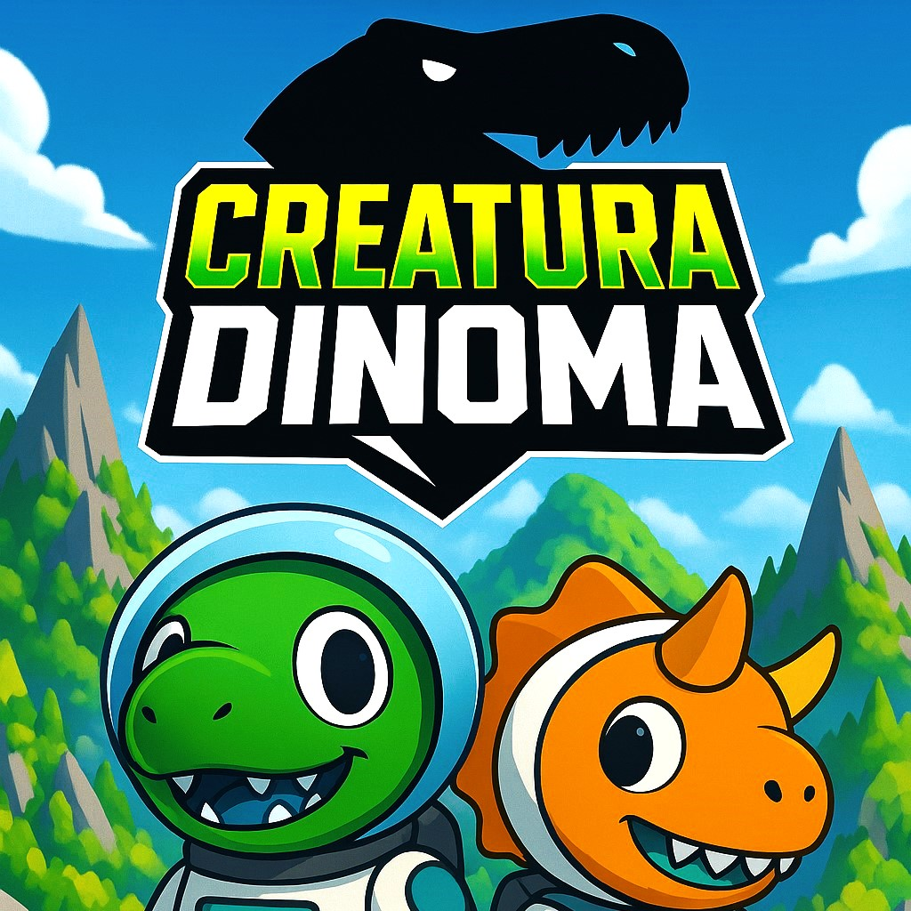
Juego 3D de extracción hecho en Unity.

Terror Paranormal en un cementerio hecho en Unity.

Rogue-lite Mobile Vertical hecho en Jabali studio.

Simulador de Robot formato Vertical hecho en Astrocade.

Dungeon Crawler con Mazmorras Procedurales hecho en Unity 6000.

Prototypo incremental de Mantener y Alimentar una maquina de Hielo.

Drena Salud y Asesina al Corazon en este Bullet Hell 2D Sangriento.
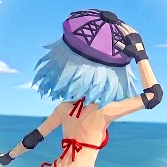
¿Seras capas de surfear por la Cascada de 5000 Metros?.
¡Echá un vistazo a mis juegos publicados directamente desde la plataforma!